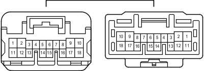

Наименование
Жгут проводов панели приборов и напольный жгут проводов № 2 (боковая панель с левой стороны кожуха)
Код
GR3
Каталожный номер
90980-12739/90980-12738
Цвет
Синий
Технические характеристики

Расположение
Электропроводка в панели приборов (для моделей с левосторонним рулевым управлением) 2
Электропроводка в панели приборов (для моделей с правосторонним рулевым управлением) 2
Система
Фонари заднего хода
Система управления замками дверей
Иммобилайзер двигателя (для моделей с системой посадки и запуска)
Система посадки и запуска
Освещение
Мультиплексная система передачи данных (CAN, для моделей с левосторонним рулевым управлением)
Сиденье с электроприводом (сиденье водителя в моделях с левосторонним рулевым управлением и функцией сохранения положения сиденья)
Сиденье с электроприводом (сиденье переднего пассажира в моделях с правосторонним рулевым управлением)
Электрические стеклоподъемники (для моделей с правосторонним рулевым управлением)
Предаварийная система безопасности
SRS (для моделей с подушками безопасности занавесочного типа)
Система предупреждения о непристегнутом ремне безопасности
Подогреватели сидений
Система запуска (для моделей с системой посадки и запуска)
Система блокировки рулевого управления (для моделей с системой посадки и запуска)
Задние фонари
Сцепное устройство для прицепа
Указатели поворота и аварийная сигнализация (для моделей с правосторонним рулевым управлением)
Система дистанционной блокировки дверей (для моделей с системой посадки и запуска)